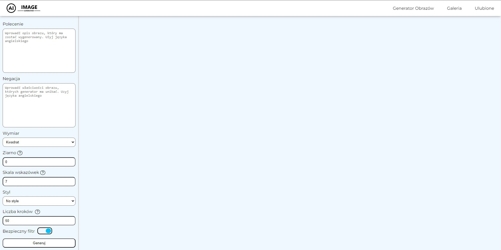
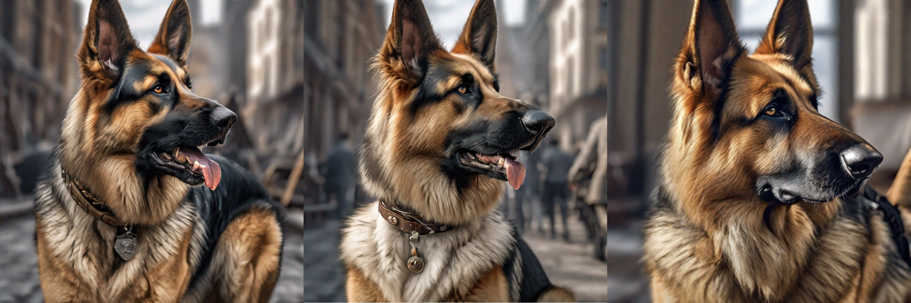

Stable Diffusion XL to jeden z najpopularniejszych generatorów obrazów wykorzystujących sztuczną inteligencję
Na podstawie promptu (opisu tekstowego), jest w stanie wygenerować grafiki o rozmaitych stylach
Na podstawie promptu (opisu tekstowego), jest w stanie wygenerować grafiki o rozmaitych stylach
Przejdź do podstrony "Generator Obrazów" - odnośnik znajdziesz na pasku nawigacji
W celu wygenerowania obrazu wypełnij formularz znajdujący się po lewej stronie ekranu
Poniżej znajdziesz informacje odnośnie tego co oznaczają poszczególne pola i jakie wartości przyjmują
Jest polem, w którym należy wprowadzić opis obrazu w języku angielskim. Może to być jedno słowo, kilka zdań, lub zbiór krótkich fraz oddzielonych przecinkami. Najlepszy efekt osiągniemy pisząc zaawansowane polecenia uwzględniające poniższe elementy naszego obrazu:
Obiekt: postać, zwierzę, miejsce, przedmiot i tym podobne
Technika: zdjęcie, obraz, ilustracja, rzeźba, rysunek, gobelin i tym podobne
Otoczenie: w mieszkaniu, na ulicy, w ogrodzie, pod wodą, w zatłoczonym mieście
Oświetlenie: miękkie, neonowe, abient, studyjne i tym podobne
Kolor: jaskrawy, stonowany, ciemny, czarno-biały, pastelowy
Nastrój: radosny, ponury, spokojny, melancholijny i tym podobny
Kompozycja: portret, ujecie z góry, panorama i tym podobne
Jest polem, do ktorego należy wpisać własciwości obrazu jakich generator powinien unikać, takich jak np słaba jakość, deformacje czy dodatkowe kończyny u postaci. W tym przypadku również zaleca się używać języka angielskiego
Współczynnik proporcji naszego obrazu. Do wyboru są następujące opcje:
Kwadrat czyli obraz o wymiarach 1024px na 1024px
Portret czyli obraz o wymiarach 768px szerokości i 1024px wysokości
Krajobraz czyli obraz o wymiarach 1024px szerokości i 768px wysokości
Jest parametrem określającym inicjalizację obrazu. Użytkownik nie musi zmieniać tego paramteru, ponieważ domyślna wartość 0 oznacza, że program wygeneruje losową liczbę, odpowiadającą zakresowi pomiędzy 1 a 9007199254740991. Ręczne wpisanie numeru ziarna ma jednak swoje zalety. Jeżeli użyjemy tego samego ziarna i dodamy lub usuniemy jakiś element z naszego polecenia to otrzymamy zmodyfikowany obraz, który powinien być zbliżony do oryginału
Określa jak bardzo generator powinien trzymać się tekstowego polecenia. Mniejsze wartości tego atrybutu oznaczają, że generator będzie bardziej kreatywny w tworzeniu nowego obrazu, ale mniej dokładny w odwzorowywaniu wszystkich elementów przekazanych w poleceniu
Pozwala na wybranie z listy jednego z dostępnych styli generowania obrazu. Do wyboru są następujące opcje: Bez stylu, Ulepszony, Fotograficzny, Sztuka cyfrowa, Komiks, Sztuka fantastyczna, Zdjęcie analogowe, Neonowy, Izometryczny, Lowpoly, Origami, Rysunek kreskowy, Modelinowy, Model 3D, Sztuka pikselowa, Tekstura, Futurystyczny, Realistyczny, Akwarelowy, Fotorealistyczny
Stable Diffusion XL jest modelem dyfuzyjnym, co oznacza że na początku generowania obrazu, nakładany jest losowy szum, który później z każdą kolejną iteracją jest częściowo usuwany, co zapewnia wyższą jakość obrazu. Liczba kroków pozwala nam określić ile takich iteracji generator powinien wykonać. Ustawienie dużej liczby kroków, może pozwolić nam na wygenerowanie obrazów o wysokiej jakości, jednakże wpływa także na czas oczekiwania oraz koszt wygenerowanego obrazu
Gdy bezpieczny filtr będzie zaznaczony, model będzie aktywnie odfiltrowywać wszlkie potencjalne treści NSFW (nieodpowiednie w pracy), zapewniając użytkownikom bezpieczeniejsze i bardziej odpowiednie doznania